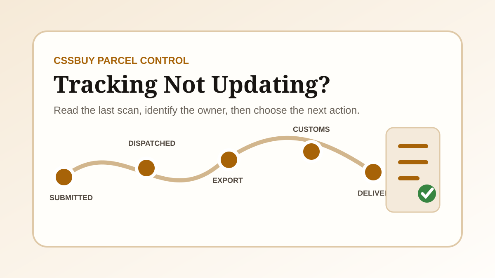

CSSBuy Tracking Not Updating? 2026 Status Fix Guide
When CSSBuy tracking is not updating, the missing scan is only the symptom. The useful question is which handoff has not produced evidence yet. A parcel can be waiting for warehouse dispatch, sitting between label creation and carrier acceptance, moving through an export network that posts scans in batches, undergoing customs processing, or waiting for a local delivery partner. Each situation has a different owner and a different next step.
This guide gives you a diagnostic workflow instead of a promise about a universal delivery time. It covers international parcels after submission. If the seller has not yet delivered your item to the CSSBuy warehouse, use the order status guide because that is a domestic-order problem, not an international tracking problem.
Start with the parcel record, not the public tracker
Open the exact entry under My Parcel and record the parcel number, submission date, payment time, shipping line, destination, declared weight, tracking number, latest status and time of the latest scan. Also save the current screen before contacting anyone. A parcel number identifies the CSSBuy transaction; a tracking number identifies the carrier record. You usually need both.
CSSBuy’s current support route for parcel enquiries is My Parcel, then the relevant parcel, then Add Note. That route keeps the question attached to the shipment. It is stronger than a general message that says only “my tracking is stuck” because the support agent can see the parcel context.
Fast diagnosis: identify the last confirmed event, the number of full days since that event, and the next event that should logically appear. Do not count from the day you bought the product if the parcel was submitted later.
Know the four records that buyers often mix together
The warehouse status tells you whether CSSBuy has packed or released the parcel. The CSSBuy parcel page connects the warehouse transaction to a logistics line. The carrier record shows scans produced by the shipping network. The destination carrier record may begin only after a handoff in the destination country. Those records do not always refresh at the same moment.
A CSSBuy status such as submitted or processing can exist before an international tracking number has useful movement. A tracking number can exist before the carrier physically accepts the parcel. An export carrier can show movement while the destination postal system still says that it has not received the item. Treat each record as evidence of one stage, not as four conflicting versions of the same stage.
Stage 1: submitted or paid, but not dispatched
After you submit stored items and pay the international shipping deposit, the warehouse still has operational work to perform. Items may be consolidated, unnecessary packaging removed, protection added, measurements checked, declarations reviewed and the final parcel handed to the selected line. A tracking page cannot show carrier movement before that handoff happens.
Check whether the parcel page is asking for a decision. A restricted commodity, declaration issue, address problem, unpaid difference or packing question can stop progress without looking like a carrier delay. If the parcel remains in a warehouse-controlled status, ask about the specific release condition: whether packing is complete, whether final weight is confirmed, and whether any action is required from you.
Stage 2: tracking number created, but no acceptance scan
Electronic shipment information is often created before the physical parcel reaches a carrier’s first scanning point. The number is real, but it does not prove that the logistics network has custody. This is the gap behind messages such as “label created,” “shipment information received” or a blank result immediately after dispatch.
Allow the line’s normal induction process to occur, especially around weekends, holidays or consolidated pickups. If the record remains at pre-advice while CSSBuy shows dispatch, ask for the physical handoff date and whether the line uses a domestic transfer before the first public scan. The answer tells you whether CSSBuy, a consolidator or the carrier currently owns the delay.
Stage 3: export movement pauses between scans
International tracking is event-based, not continuous GPS. A parcel can travel between facilities, wait for a flight or line-haul departure, enter a consolidated container, or move through a partner network without publishing a new consumer-facing scan. Some events are uploaded in batches. A silent interval is therefore not proof that the parcel is lost.
Read the last scan literally. “Departed facility” means a departure event was recorded, not that the next facility must scan it the same day. “Airline received” does not guarantee immediate departure. “Handed to airline” and “flight departed” are different milestones. Compare the silence with the route’s own published range and recent operational conditions rather than an unrelated express service.
Stage 4: customs or destination handoff
Once the parcel reaches the destination country, tracking may pause while entry data is processed, customs reviews the shipment, taxes or documents are assessed, or the parcel is transferred to a local carrier. The export number and local number may be connected, but the destination carrier may not show anything until it physically receives the parcel.
Look for wording that distinguishes arrival from release. Arrival at a destination airport is not the same as customs clearance. Customs release is not the same as handoff to the last-mile carrier. If a local tracking number is shown, check whether the parcel is recognised there. If no local number appears, include that fact in the parcel note instead of guessing which delivery company has it.
Stage 5: delivery scan without the parcel
A delivered scan changes the problem from transit visibility to proof of delivery. First confirm the address used on the submitted parcel and the exact timestamp. Check safe locations, building reception, household members and the local carrier’s delivery evidence. Do this quickly because carrier investigation windows can be limited.
Keep packaging and photo evidence if the parcel arrives damaged or incomplete. For a missing delivery, save the carrier page before it changes and report the mismatch through My Parcel. State whether the carrier confirms a location, signature or recipient. A precise record gives CSSBuy something that can be escalated to the logistics provider.
Use an evidence threshold instead of refreshing all day
| Last evidence | Likely owner | Best next action |
|---|---|---|
| Parcel paid; no dispatch | Warehouse or buyer decision | Check notes, packing and unpaid differences |
| Number created; no carrier acceptance | Warehouse, consolidator or first carrier | Ask for the physical handoff date |
| Export scan; then silence | International logistics network | Compare with the selected line’s range |
| Destination arrival; no local movement | Customs or destination partner | Check clearance and local-number status |
| Delivered; parcel missing | Last-mile carrier | Preserve delivery evidence and report promptly |
Set a review point after each meaningful event. Record the date and decide when you will check again. Constant refreshing adds stress but no evidence. A review point turns waiting into a controlled process and makes it obvious when the situation has passed the line’s stated range.
Write a parcel note that can be acted on
A useful note includes the CSSBuy parcel number, tracking number, shipping line, destination country, latest scan with timestamp, number of days without a new event and one specific request. Ask for confirmation of the current logistics stage, the physical handoff date, the local tracking number or escalation to the carrier—whichever matches the evidence.
For example: “Parcel P123, tracking ABC123, line X to Canada. The last scan was export departure on September 2 and there has been no update for 12 full days. Please confirm whether the parcel has entered the destination network and provide any local tracking number.” This is much easier to investigate than “Where is my package?”
What not to do when tracking stops
Do not submit several notes about the same unchanged scan; fragmented messages can obscure the timeline. Do not treat an estimated transit range as a guaranteed delivery date. Do not assume a tracking number with no first scan proves loss. Do not discard parcel photos, payment records or the package after delivery. And do not post personal address or tracking details publicly while seeking advice.
Avoid changing the story each time you ask. Keep one timeline and add only new evidence. If support provides a carrier case number or a new local number, add it to the record and use it in the next follow-up.
A seven-step CSSBuy tracking checklist
- Confirm that you are looking at My Parcel, not the original product order.
- Copy both the CSSBuy parcel number and the carrier tracking number.
- Record the exact last scan and its timestamp.
- Identify whether the warehouse, first carrier, export network, customs or local carrier owns the next event.
- Compare elapsed time with the selected line’s current range.
- Use Add Note on the relevant parcel with one evidence-based request.
- Preserve screenshots and update the same timeline when new evidence appears.
The goal is a controlled next action
Tracking cannot prevent every delay, but it can prevent confusion. The strongest response to a missing update is to identify the last verified handoff and ask the party responsible for the next handoff to confirm it. Sometimes the correct action is to wait for a scheduled induction or customs event. Sometimes it is to supply missing information. Sometimes it is to request a carrier investigation.
Use the parcel record as the source of truth, interpret scans as milestones, and keep one evidence timeline. That process will not create a scan, but it will tell you whether the parcel is still inside a normal silent interval or whether CSSBuy now has a precise issue to escalate.